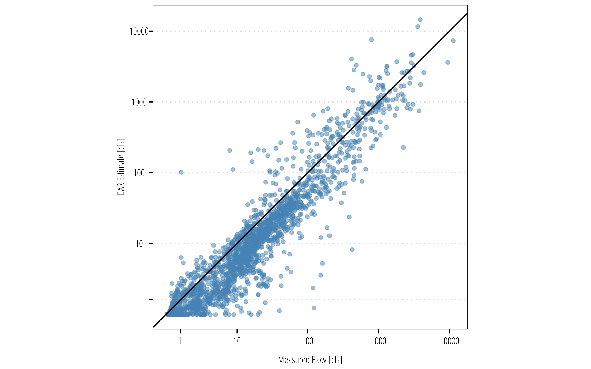

## load packages
library(dataRetrieval)
library(dplyr)
library(ggplot2)
library(twriTemplates)5 Drainage Area Ratio
The drainage area ratio (DAR) is a simple way to estimate daily runoff at an ungaged stream site using a nearby surrogate stream gage. The principle idea is that two nearby watersheds will have mean daily discharges that are equivalent to the ratio of their drainage areas. The general equation for the DAR is:
\[ Q_y = Q_x\left(\frac{A_y}{A_x}\right)^\phi \]
where \(Q_y\) is the estimated mean daily streamflow at ungaged site \(y\), \(Q_x\) is the mean daily streamflow at gaged site \(x\), \(A_y\) and \(A_x\) are the respective drainage areas above sites \(y\) and \(x\). The exponent \(\phi\) is generally considered equal to one.
The performance of the DAR will vary but does prove to work well for streams with similar flow characteristics. In absence of localized data, regionalized equations, or rainfall-ruinoff models; it is one of the only methods available to estimate discharge at an unknown site.
5.1 Basic Approach
The basic approach where the exponent \(\phi\) equals one is shown below. We will use known data from two USGS gages to evaluate performance.
For this example, I am using two USGS sites. In application you would only use a single site.
## Get drainage areas for two watersheds with dataRetrieval
siteInfo <- readNWISsite(c('08110100', '08109800'))
siteInfo$contrib_drain_area_va[1] 244 195Download the mean daily streamflow from 08110100 (Davidson Creek):
Davidson <- readNWISdv('08110100', "00060", "2015-01-01", "2020-12-31")
Davidson <- renameNWISColumns(Davidson)
head(Davidson) agency_cd site_no Date Flow Flow_cd
1 USGS 08110100 2015-01-01 4.82 A
2 USGS 08110100 2015-01-02 17.20 A
3 USGS 08110100 2015-01-03 258.00 A
4 USGS 08110100 2015-01-04 288.00 A
5 USGS 08110100 2015-01-05 91.80 A
6 USGS 08110100 2015-01-06 40.90 ADownload mean daily streamflows at 08109800 (Yegua Creek):
Yegua <- readNWISdv('08109800', "00060", "2015-01-01", "2020-12-31")
Yegua <- renameNWISColumns(Yegua)Now create a dataframe to compare measured streamflows at Yegua Creek with DAR estimated flows using Davidson as the source creek:
# calculate the area ratio
DAR <- siteInfo$contrib_drain_area_va[2] / siteInfo$contrib_drain_area_va[1]
# create columns for the area ratio and DAR*Davidson Flow
Davidson <- Davidson |>
mutate(DAR = DAR,
est_Yegua_Q = DAR * Flow)
# join the data by date
estimates <- Yegua |>
left_join(Davidson |> select(Date, Davidson_Flow = Flow, DAR, est_Yegua_Q),
by = c("Date" = "Date"))
ggplot(estimates) +
geom_point(aes(Flow, est_Yegua_Q),
color = "steelblue",
alpha = 0.5) +
geom_abline(slope = 1) +
coord_equal() +
scale_x_continuous(trans = "pseudo_log",
breaks = c(1,10,100,1000,10000)) +
scale_y_continuous(trans = "pseudo_log",
breaks = c(1,10,100,1000,10000)) +
theme_TWRI_print() +
labs(x = "Measured Flow [cfs]",
y = "DAR Estimate [cfs]")
5.2 Parameterized Exponent
Incomplete
Still needs to be written.
5.3 Other Data Considerations
Incomplete
Add discussion about naturalized flows.